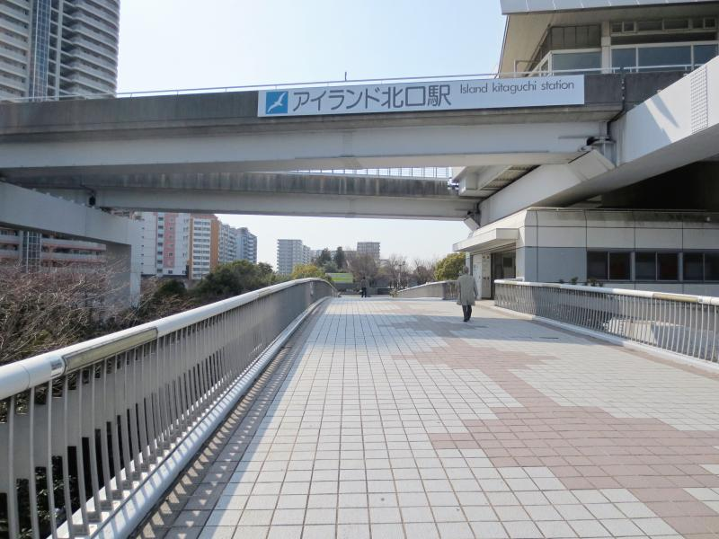
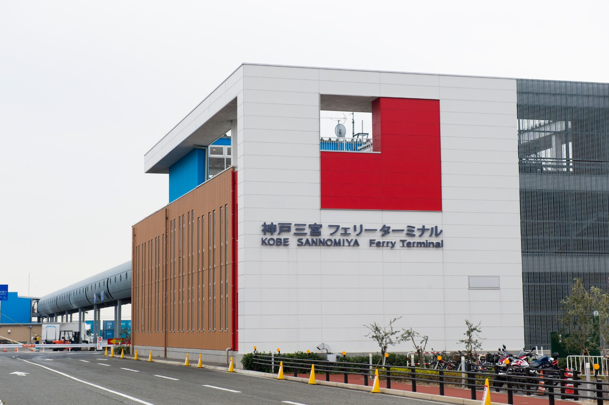
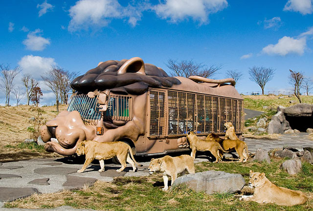
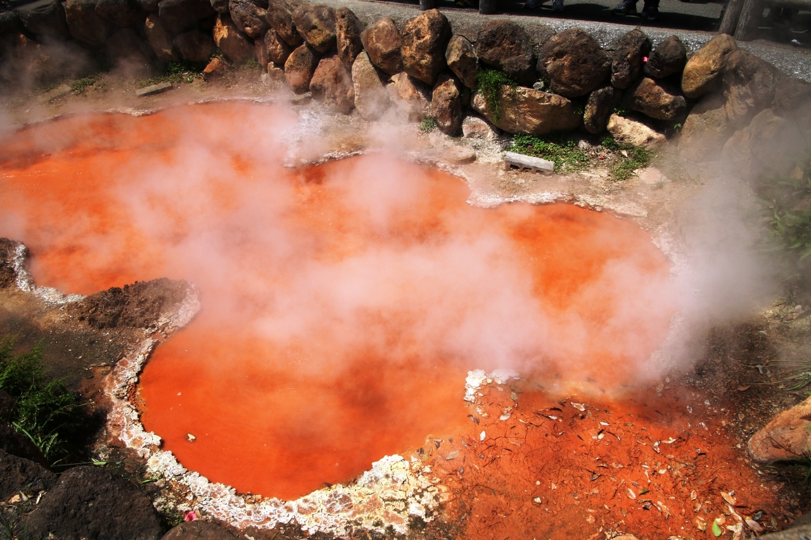
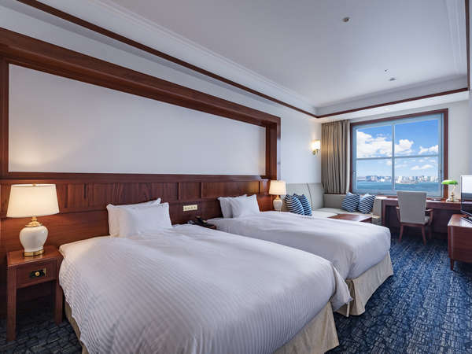
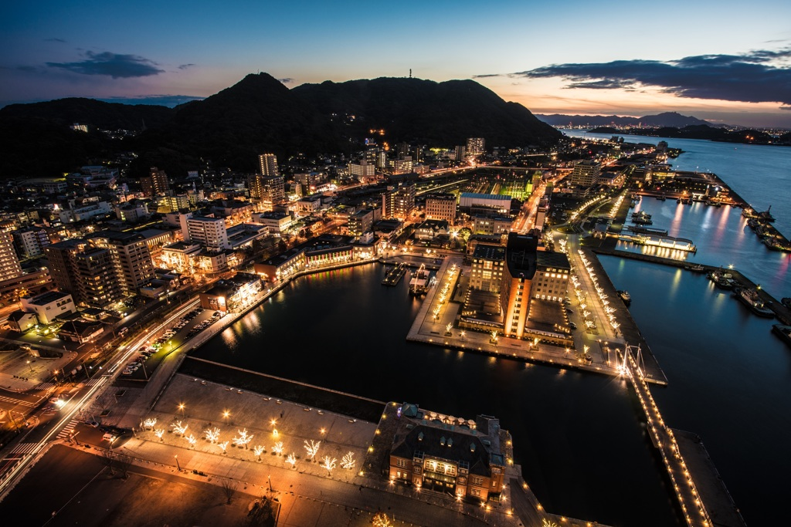
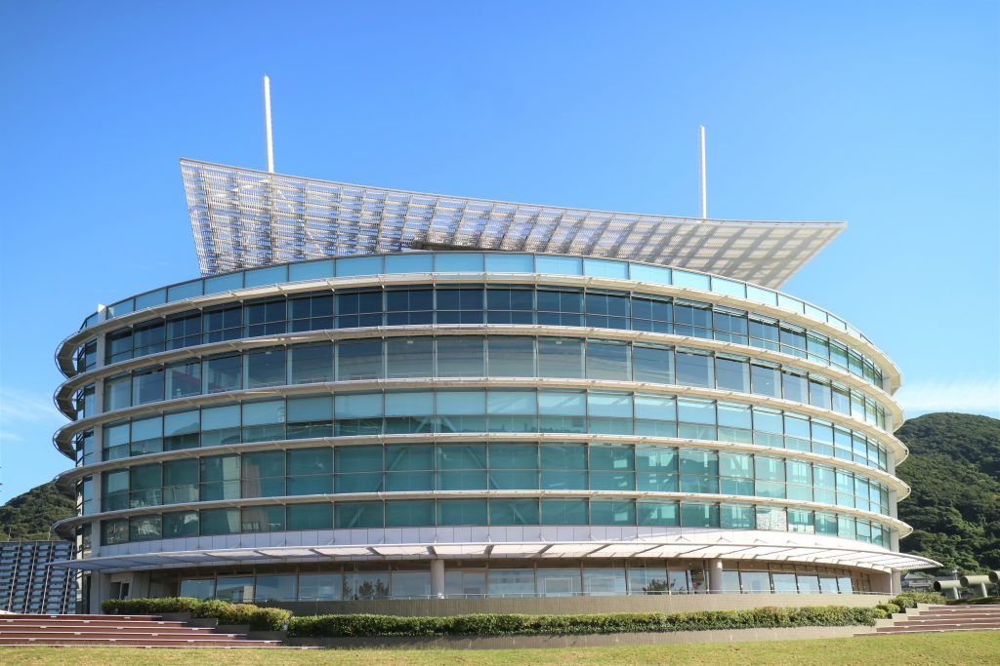
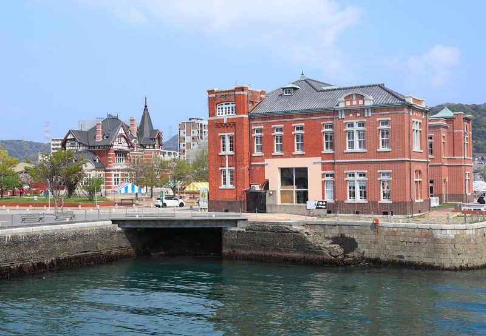

Day1
アイランド北口駅
神戸新交通六甲アイランド線の駅
神戸三宮フェリーターミナル
所在地： 〒650-0041 兵庫県神戸市中央区中央区新港町３−７
電話： 078-327-3322
Day2
アフリカンサファリ
日本一猛獣の多いアフリカンサファリ。ライオンだけで約１００頭
往復+入園料+ｼﾞｬﾝｸﾞﾙﾊﾞｽ割引券-3700円
別府鉄輪（かんなわ）温泉

大分県別府市（旧国豊後国速見郡）にある温泉で、別府八湯の一つ。温泉の湧出量では日本最大である別府の源泉の大半が鉄輪に集中している。湯治場の面影を濃く残し、レトロな町並みと別府地獄めぐりの多くが鉄輪温泉にある。
地獄めぐり
地獄の名称由来
ここ鉄輪・亀川の地獄地帯は、千年以上も昔より噴気・熱泥・熱湯などが噴出していたことが「豊後風土記」に記せられ、近寄ることもできない忌み嫌われた土地であったといわれています。そんなところから、人々より、「地獄」と称せられるようになりました。今も鉄輪では温泉噴出口を「地獄」とよんでいます。
旧門司港ホテル
2019年3月10日にリニューアルグランドオープンした門司港駅(重要文化財)から徒歩2分！唐戸市場への船乗り場まで徒歩2分！門司港レトロ・下関観光にアクセス抜群の好立地！
門司港レトロ展望室
門司港レトロ展望室は、日本を代表する建築家・黒川紀章氏が設計した高層マンション『レトロハイマート』の31階にあります。高さ103ｍから関門海峡や門司港レトロの街並みを見渡せる絶景ポイントです。また、夜景も見ることができ恋人たちのデートスポットとしても人気です。館内にはカフェが併設してあり、ゆっくりとお茶を飲みながらくつろぐこともできます。
Day3
関門海峡ミュージアム
「海峡ドラマシップ」の愛称で親しまれている「関門海峡ミュージアム」は、関門海峡にまつわる歴史や文化、自然などを楽しく学べる施設として平成15年に開館しました。人気の観光スポット「門司港レトロ」の一画にあります。展示物だけではなく、光や音など五感で楽しめる施設で、子ども連れのファミリーはもちろん、歴史好きの人や女性も楽しめます。
門司港レトロ地区
福岡県北部の関門海峡に面した町
明治初期に開港して、120年。門司港には、明治から昭和初期にかけて建築された、趣のある建物が今でも残っています。現在は門司港レトロとして九州の人気観光地の一つとなっています。